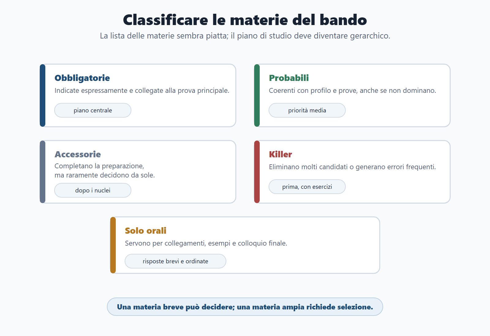
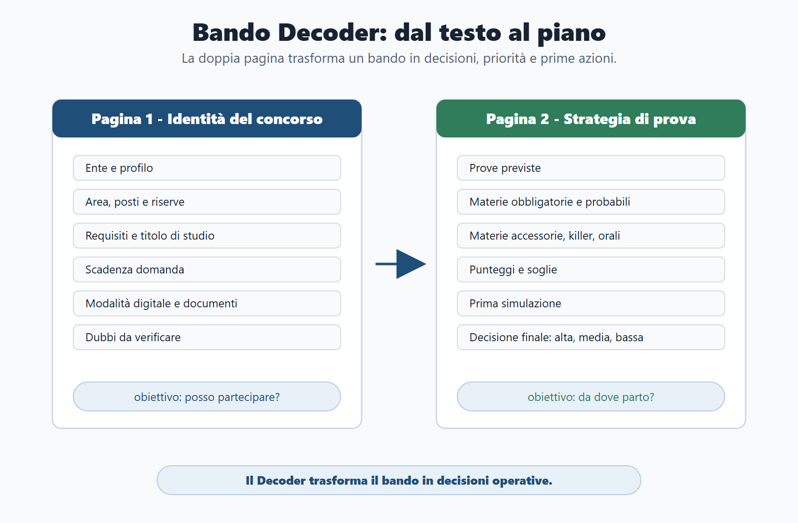
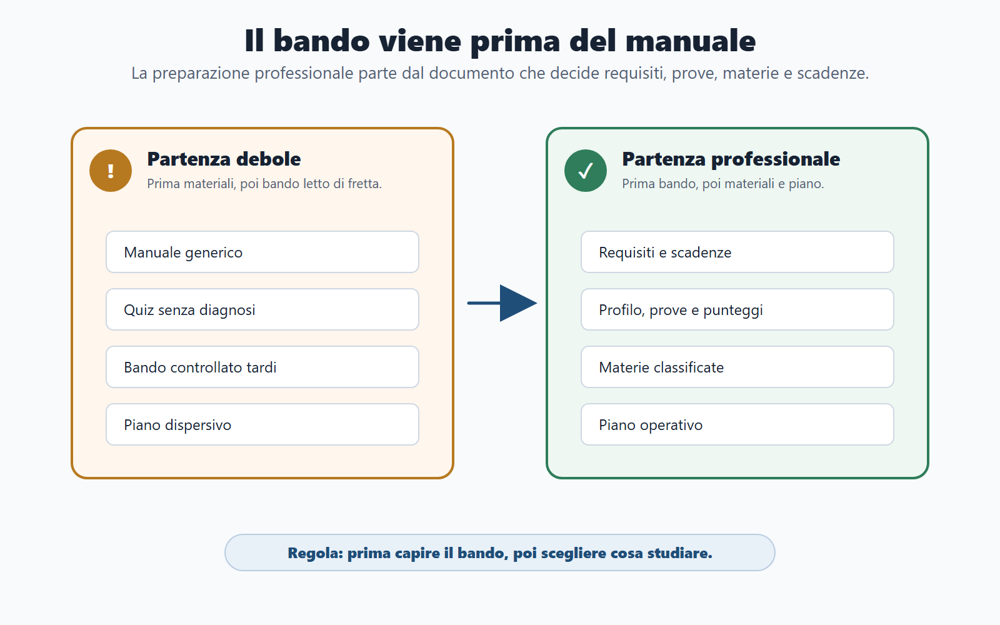
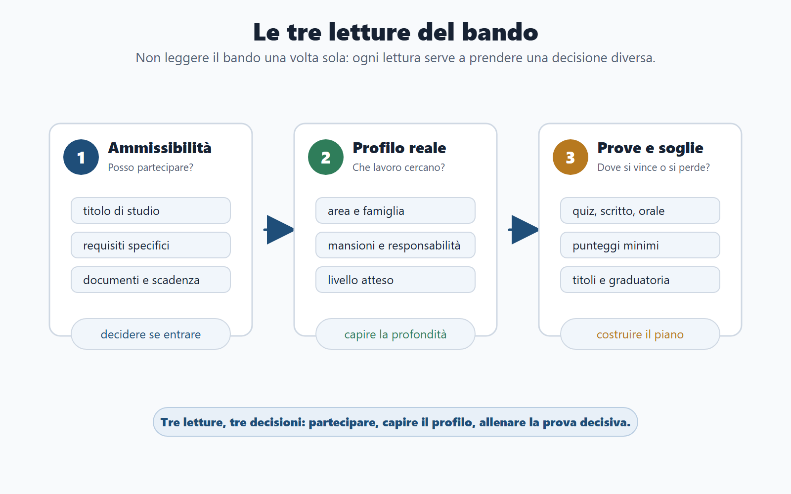
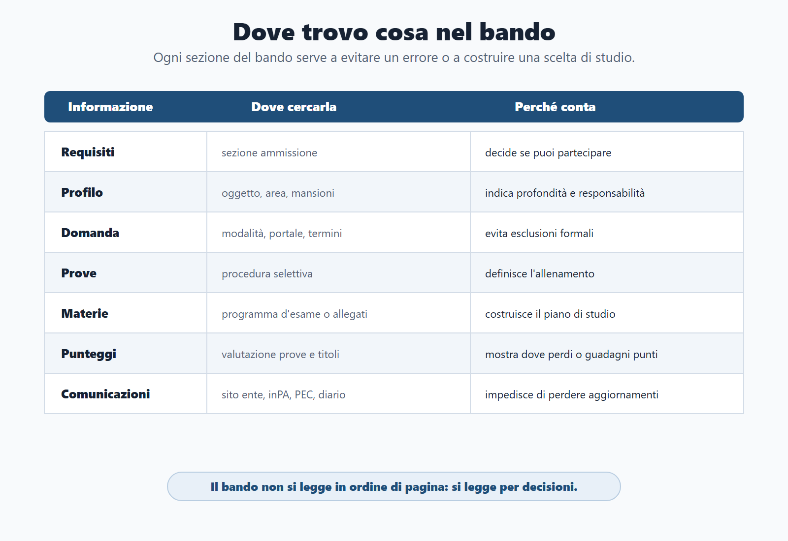

VOL-01 · Capitolo 02
Parte I · Il Metodo BANDO
Anatomia
del bando
Il bando è il documento più importante del concorso. Non perché sia il più semplice da leggere, ma perché decide ciò che viene dopo: se puoi partecipare, quanto tempo hai, quali prove affronterai, quali materie pesano e quale strategia di studio ha senso.
Schema
Gerarchia materie bando

Schema
Bando decoder doppia pagina

Schema
Bando prima del manuale

Schema
Tre letture del bando

Schema
Mappa informazioni bando

01 · Prima del manuale
Il candidato medio scorre. Il candidato preparato smonta.
Il candidato medio scarica il bando, lo scorre in fretta e cerca subito un manuale o una banca dati. Il candidato preparato fa il contrario: prima smonta il bando, poi decide come studiare. Qui si vede la differenza tra una preparazione generica e una preparazione professionale.
Partenza debole
Il documento ufficiale diventa un ostacolo burocratico da sbrigare. Si compra un testo ampio e si inizia dalla prima pagina. Le materie, le soglie e l’orale restano indistinte finché non è tardi.
Partenza professionale
Da una lettura precisa dipendono le materie da studiare, le soglie, l’orale, le scadenze e persino la scelta di candidarti a un profilo compatibile con il tuo tempo e le tue competenze.
02 · Quattro domande
La domanda giusta non è «che cosa studio?»
La prima domanda non è «quale manuale compro?». È: che cosa mi chiede questo bando e quale decisione devo prendere? Solo dopo queste quattro risposte ha senso costruire il piano.
| Domanda | Che cosa cerchi |
|---|---|
| Posso partecipare? | Requisiti, titolo di studio, requisiti specifici, cittadinanza, idoneità, documenti e condizioni di accesso. |
| Mi conviene partecipare? | Posti, riserve, profilo, livello, sedi, prove, tempi e rapporto con altri concorsi aperti. |
| Che cosa studio prima? | Materie, punteggi, soglie, prove selettive, argomenti killer e materie solo orali. |
| Che cosa devo produrre? | Quiz, risposta sintetica, caso pratico, orale, prova digitale, documenti o titoli. |
03 · BANDO
Come usare il metodo sul documento ufficiale
Ogni fase cerca qualcosa di preciso nel bando e produce una decisione, non un’intenzione.
| Che cosa cerchi nel bando | Decisione pratica | |
|---|---|---|
| B — Bando | Requisiti, profilo, prove, scadenze, punteggi. | Capire se partecipare e che cosa conta. |
| A — Aree | Materie comuni, specifiche, accessorie. | Separare nucleo base e modulo del profilo. |
| N — Nuclei | Argomenti ad alta probabilità o alto rischio. | Decidere che cosa studiare prima. |
| D — Diario | Scadenze, dubbi, documenti, errori, punti deboli. | Evitare dimenticanze e ripetere con criterio. |
| O — Output | Tipo di prova e prodotto richiesto. | Allenare quiz, scritto, caso, orale o documenti. |
04 · Prima lettura
Controllo di ammissibilità, a freddo
Titolo di studio, requisiti professionali, esperienza, abilitazioni, condizioni soggettive e termini della domanda vengono prima di ogni scelta di studio. Non devi innamorarti del concorso prima di sapere se puoi partecipare.
| Controllo | Perché conta |
|---|---|
| Possiedo il titolo di studio richiesto? | Senza titolo, lo studio è irrilevante per quella selezione. |
| Ci sono requisiti specifici ulteriori? | Esperienza, abilitazioni, patenti, iscrizioni: vanno verificati, non presupposti. |
| Documenti, certificazioni, dichiarazioni? | Le esclusioni formali bruciano mesi di lavoro. |
| Domanda su portale o procedura digitale? | Accesso, SPID, scadenze orarie, ricevuta di invio. |
| La scadenza è compatibile con domanda e studio? | Se è troppo vicina, decidi se investire o archiviare. |
| Dubbi da verificare su fonte ufficiale o FAQ? | Un requisito dubbio si segna: non si interpreta a sentimento. |
Trattare il bando come un ostacolo burocratico. Invece indica se ha senso partecipare, come organizzare il tempo e dove puoi sbagliare. Un requisito dubbio non si «interpreta»: si verifica.
05 · Seconda lettura
Il nome del concorso dice poco da solo
Un istruttore amministrativo, un funzionario amministrativo-contabile, un assistente tecnico, un profilo digitale o una posizione dirigenziale richiedono preparazioni diverse. Il profilo ti dice come verranno usate le materie.
Profilo
Quale lavoro si svolgerà: mansioni, autonomia, livello atteso.
Prove
Come verrà selezionato il candidato: quiz, scritto, caso, orale, titoli.
Materie
Quali contenuti servono davvero per quella prova, non per il manuale intero.
Il diritto amministrativo può essere richiesto come base nozionistica, come gestione di un procedimento o come caso. Il pubblico impiego può comparire in un quiz o diventare un problema situazionale su doveri, conflitto di interessi o responsabilità. Senza collegare i tre elementi, studi la materia «in astratto».
06 · Terza lettura
Prove, punteggi e soglie sono il cuore
Qui capisci se devi preparare una preselettiva, uno scritto, una teorico-pratica, un orale, una valutazione dei titoli o una combinazione. Una materia può pesare molto se compare nella prova che elimina più candidati, anche quando occupa poche pagine nel manuale.
| Elemento | Domanda da farti | Conseguenza sul piano |
|---|---|---|
| Preselettiva | È prevista? È a quiz? Su quali materie? | Simulazioni a tempo e diario errori. |
| Scritto | È teorico, sintetico o pratico? | Schemi di risposta, non solo lettura. |
| Teorico-pratica | Ci sono casi, atti, problemi o scenari? | Esempi e griglie di soluzione. |
| Orale | Quali materie restano per il colloquio? | Esposizione, collegamenti, trappole. |
| Punteggi | Qual è il minimo per superare? | Capire dove si guadagna o si perde. |
| Titoli | Quanto pesano? Sono già documentabili? | Stimare vantaggio o svantaggio iniziale. |
07 · Gerarchia delle materie
Obbligatorie, probabili, accessorie, killer, solo orali
Nel bando amministrativo, enti locali, pubblico impiego, trasparenza, informatica e inglese possono apparire sullo stesso piano. Nel piano di studio hanno pesi diversi. Una materia breve può essere killer; una materia ampia può richiedere selezione, non enciclopedia.
| Tipo | Come la riconosci | Come la studi |
|---|---|---|
| Obbligatoria | Indicata in modo espresso e collegata alla prova principale. | Entra nel piano centrale. |
| Probabile | Coerente con profilo e prove, anche se non domina il bando. | Priorità media. |
| Accessoria | Completa la preparazione, ma raramente decide da sola. | Dopo i nuclei centrali. |
| Killer | Può eliminare molti candidati o generare errori frequenti. | Presto, con esercizi e ripassi. |
| Solo orale | Più utile per collegamenti e colloquio finale. | Risposte brevi e ordinate. |
08 · Mappa del documento
Il bando non si legge in ordine di pagina
Si legge per decisioni da prendere. Sai dove cercare prima di sottolineare tutto.
| Informazione | Dove cercarla | Perché conta |
|---|---|---|
| Requisiti | Articoli iniziali o sezione ammissione. | Decide se puoi partecipare. |
| Profilo | Oggetto, area, famiglia, mansioni. | Indica la profondità richiesta. |
| Posti e riserve | Sezione posti, riserve, preferenze. | Incide sulla competizione effettiva. |
| Domanda | Modalità e termini di presentazione. | Evita esclusioni per errore formale. |
| Prove | Procedura selettiva. | Definisce l’allenamento. |
| Materie | Programma d’esame o allegati. | Costruisce il piano di studio. |
| Punteggi e soglie | Valutazione prove e titoli. | Mostra dove si vince o si perde. |
| Comunicazioni | Portale, sito ente, inPA, PEC, diario prove. | Evita di perdere aggiornamenti ufficiali. |
09 · Bando Decoder
Due pagine in cui il bando diventa piano
Se non hai compilato almeno una scheda sintetica del concorso, non hai ancora iniziato davvero la preparazione. Hai solo raccolto materiali.
Pagina 1 — identità
Ente, profilo, area o categoria, posti, riserve o preferenze, requisiti, scadenza domanda, modalità, documenti o dichiarazioni, dubbi da verificare. Qui decidi se partecipare e che cosa non può sfuggire.
Pagina 2 — strategia
Prove, materie obbligatorie, probabili, accessorie, killer e solo orali, punteggi e soglie, primo blocco di studio, prima simulazione, decisione finale: priorità alta, media o bassa.
Il Decoder trasforma il testo ufficiale in priorità, rischi e prime azioni. Se una riga resta vuota, quella è la prima cosa da cercare nel bando, non nel manuale.
10 · Caso guidato
Istruttore amministrativo comunale, quiz e orale
Materie indicate: diritto amministrativo, ordinamento degli enti locali, pubblico impiego, trasparenza e anticorruzione, informatica e inglese. Il candidato debole parte da un manuale generale. Il candidato strategico compila il Decoder.
Ammissibilità
Titolo di studio e scadenza, prima di ogni pagina di studio.
Prove
Scritto a quiz: rapidità e distrattori. Orale: risposte brevi e collegamenti, da subito.
Gerarchia
Amministrativo ed enti locali obbligatorie; trasparenza può essere killer; informatica e inglese a blocchi brevi ma costanti.
Non è «studiare tutto». È partire dalle materie che decidono lo scritto, costruire un diario errori, preparare l’orale con risposte sintetiche e controllare ogni comunicazione ufficiale dell’ente.
11 · Prima della domanda
Checklist: l’esclusione formale è evitabile
Se un punto non è chiaro, non improvvisare. Segnalo nel diario e verifica su fonte ufficiale dell’ente o sulle istruzioni richiamate dal bando.
| Controllo | Che cosa stai proteggendo |
|---|---|
| Requisiti e titolo di studio | Ammissione sostanziale. |
| Scadenza esatta, compresa l’ora | Un giorno di ritardo basta. |
| Portale o procedura digitale | Accesso, credenziali, caricamenti. |
| Documenti, dichiarazioni, ricevute, allegati | Completezza della domanda. |
| Eventuale contributo di partecipazione | Pagamento e prova di versamento. |
| Recapiti e comunicazioni ufficiali | Non perdere convocazioni. |
| Calendario prove o modalità di pubblicazione | Sapere dove guardare dopo l’invio. |
| Ricevuta finale di invio | Prova che la domanda è stata presentata. |
12 · Verifica
Due domande da saper spiegare
Perché il bando deve essere letto prima del manuale?
Perché definisce il perimetro reale del concorso: chi può partecipare, quali prove sono previste, quali materie contano, quali punteggi e soglie si applicano, quali scadenze vanno rispettate e quali documenti sono necessari. Senza questa lettura rischi di studiare molto ma male: contenuti corretti in astratto, non prioritari per quella prova.
Molte pagine nel manuale = materia più importante?
No. Il peso dipende dal bando: prova in cui compare, punteggio, soglia, profilo e modalità di valutazione. Una materia breve può essere decisiva se genera molti errori o se compare in una prova selettiva. Una materia ampia può richiedere selezione, non studio enciclopedico.
13 · Mini-esercizio
Dieci minuti, un bando, risposte scritte
Prendi un bando reale o fittizio. Se non sai compilare una riga, quella è la prima cosa da cercare nel documento ufficiale.
| Domanda | Che cosa stai verificando |
|---|---|
| Posso partecipare? Perché? | Requisiti e titolo, non il desiderio di candidarti. |
| Qual è il profilo reale? | Lavoro atteso e profondità, non solo il nome del posto. |
| Qual è la prova che elimina più candidati? | Dove concentrare il primo allenamento. |
| Quali sono le tre materie obbligatorie? | Il piano centrale, non l’elenco piatto. |
| Qual è la materia killer? | Errori frequenti o prova selettiva. |
| Quale documento potrei dimenticare? | Rischio di esclusione formale. |
| Qual è il primo blocco di studio? | Nuclei, non la prima pagina del manuale. |
| Priorità alta, media o bassa? | Tempo, posti, compatibilità con altri bandi. |
14 · Da tenere ferme
Cinque regole, con il perché
1. Il bando viene prima del manuale. Perché solo lui fissa il perimetro reale: requisiti, prove, materie, soglie e tempi.
2. Requisiti, scadenze e documenti evitano esclusioni inutili. Perché mesi di studio non riparano una domanda incompleta o tardiva.
3. Prove, punteggi e soglie decidono la strategia. Perché una materia breve può essere killer se sta nella prova che elimina di più.
4. Le materie vanno classificate, non solo elencate. Perché obbligatorie, killer, accessorie e solo orali non si studiano allo stesso modo.
5. Il Bando Decoder trasforma un testo ufficiale in un piano di azione. Perché senza scheda compilata hai raccolto materiali, non hai iniziato.
Prossimo capitolo
Il Metodo BANDO
Dal documento smontato alla procedura di lavoro: bando, aree, nuclei, diario e output, da applicare al concorso che stai preparando.